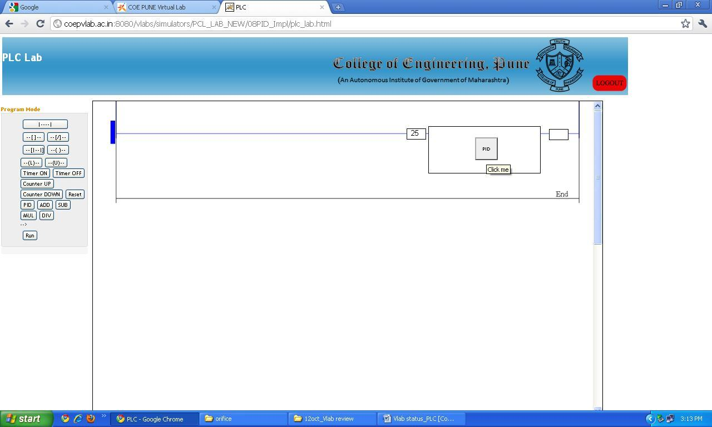
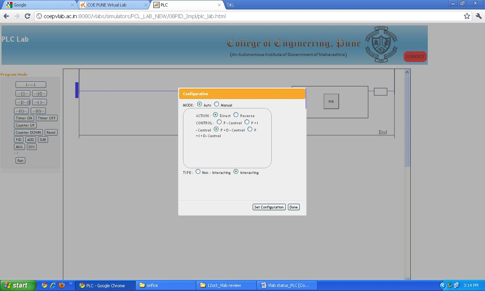
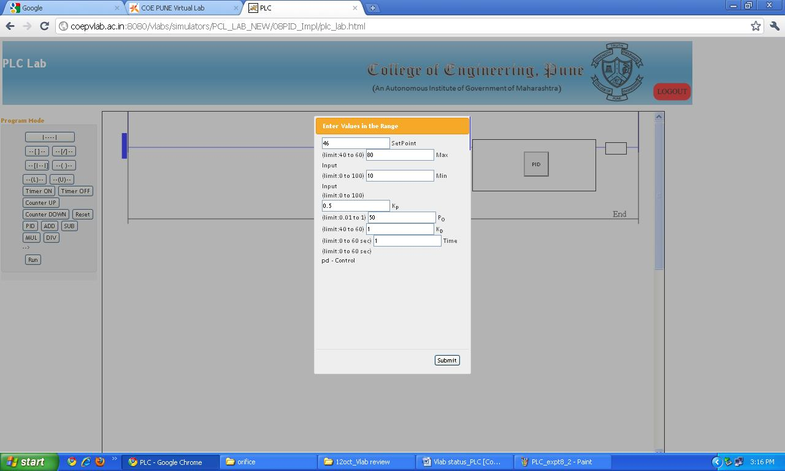
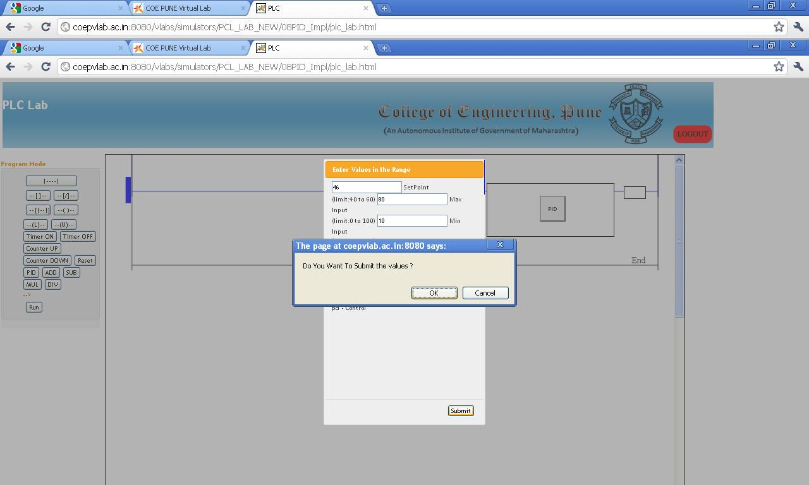
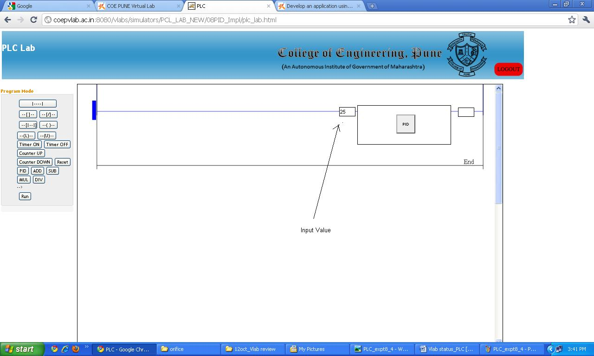

Aim
To understand working of PID function block
Objective:-
- 1. To understand proportional, integral and derivative control actions.
2. Solve the problem using ladder programming.
3. Observe the effect of change in Proporotional Band, Integral gain and Derivative gain values on PID performance

Q1.
………………… is difference between measured value and set point
Set point
Error
Disturbance
Q2.
………………… is value of process variable that is desired to be maintained
Set point
Manipulated variable
Disturbance
Q3.
…………………… is changed to keep the measured variable at set point
Set point
Disturbance
manipulated variable
Q4.
PID controller is very important block of any……………………system
Open loop
Feed forward
Feed back
Q5.
………………… function is not a part of PID block
Proportional
Matrix
Derivative

Programmable logic controller were origionally desined to implement discrete or logical control. But it has limited capability of handling analog input and outs as well as analog control. PID conrol is availbel in PLC as a function. The theory behind PID control is discussed here.
On-Off Control: Discrete ControlAs the name suggests this strategy is preferred for on –off type applications. This is a simplest form of control. Chattering of contacts for final control element is major problem but it can be avoided by addition of dead zone. Precise control is not possible due to addition of dead zone.
Mostly all domestic applications as Water Geyser, Electric iron, Electric Ovens are controlled using on-off control strategy.
PID: Continuous Control
There are 3 basic actions in PID.
- Proportional
- Integral
- Derivative Proportional mode: -
In this mode the controller output varies linearly with respect to the error. The equation for P mode is
m = Kp * e + Po
Where, m is the controller output. Kp is the gain of controller e is the error in % Po is the proportional Bias. (Value of m at e =0)
Due to addition of proportional bias, positive as well as negative errors are handled. Generally Po is set at 50% to handle equal positive and negative error range. Higher is the gain lower is the band to control.
Integral mode: -Integral mode is used to remove the offset produced due to P mode. Offset can either be positive and negative. Equation for Integral mode is

Where,
Ti is the integral time setting and t is the time.
When this action is used alone due to integral effect the action becomes too slow. When combined with Proportional, the action may go into saturation which is called as Reset Windup. To overcome this, controller output is limited at lower and higher end. This is called as Anti reset windup. But due to addition of Integral action Offset is nullified.
Derivative mode:-This action is used to increase the speed of response of slow processes. It anticipates the rate of change of error and takes the control action. Equation for Derivative mode is

Where,
Td is the derivative time .
Set Point can be achieved quickly by using D mode. In noisy environment. this action is not used as the output goes into saturated condition. Even for constant error D action provides no correction, hence not preferred alone. It is always combined with P action.
Composite controller, i.e. P, I and D adds advantages of all the three modes.
The Equation for the combined controller is

Loop tuning time can be optimized by using proper combination of PB, Ti and Td
The process parameter analog value (PV) is given as input to the block. Various settings such direct or reverse action, Proportional band setting, Set point value, Proportional band, Proportional gain, Derivative gain, Integral gain etc. are configurable parameters available in PID function.

- 1. Add a new to rung.
2. Click on PID tab to insert PID function block in the rung.
3. Set some value as input to the PID block. The screen will appear as follows.
 4. Now double click on PID function block.
 5. Click outside the blue window. You can set the action, PID mode, type of PID etc. The screen will be as follows.
 6. Click on Set configuration tab. Now you can enter the tuning parameters. See the following screen shot.
 7. Submit the values. You will get following message on screen. Click ok tab.
 8. Now go to run mode and observe the PID output.

Q1.
What will be the result if the proportional gain is set too high?
Minimun offset
Large offset
Stable loop
Q2.
……………………… action eliminates offset
Proportional
Derivative or Rate
Integral or Reset
Q3.
Major limitation of integral action is .....
Unstable loop
Increased response time
Both Unstable loop and Increased response time
Q4.
Reset wind up is observed in .... control action
Proportional + Derivative
Proportional
Proportional + Integral
Q5.
......... action is not preferred when noise is present on the process that is to be controlled
Derivative
Integral
Proportional

- 1. Explain necessity of controller in feedback control loop.
2. What is PID Tuning?
3. What do you understand by the terms interacting and non-interacting controller?
4. Explain merits and demerits of P, I and D actions.
5. What is ‘Reset windup’ and ‘Anti Reset Windup’?

- Bela Liptak, “Instrument Engineers' Handbook,: Process Control”, Third Edition
- Gregory K. McMillan, Douglas M. Considine, “Process/Industrial Instruments and Controls Handbook, 5th Edition, McGraw-Hill ,1999
- C.D. Johnson, “Process Control Instrumentation Technology” , fourth edition